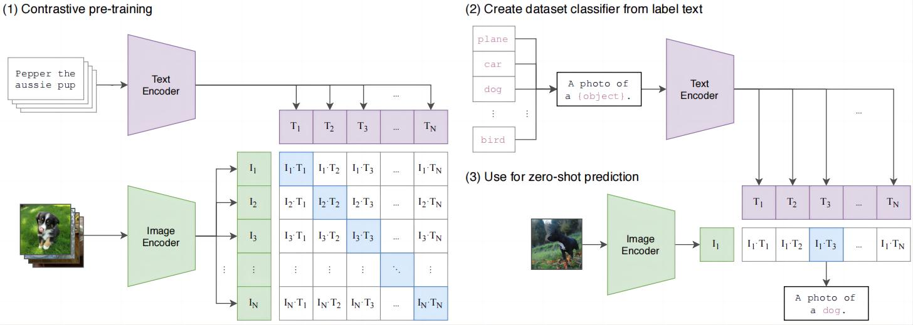
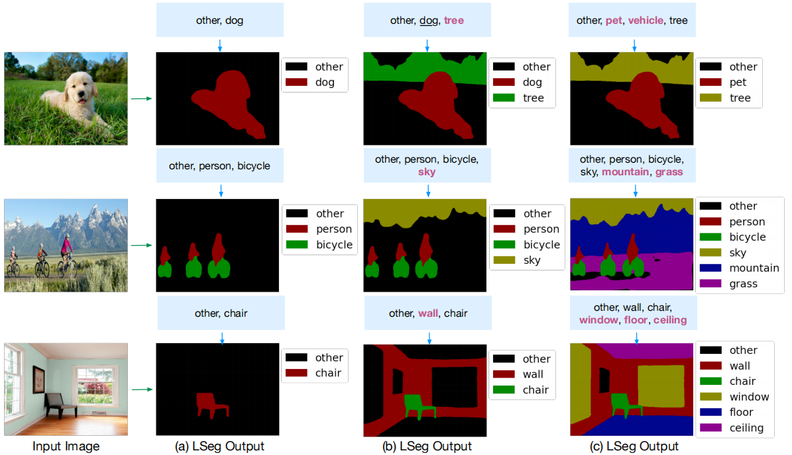
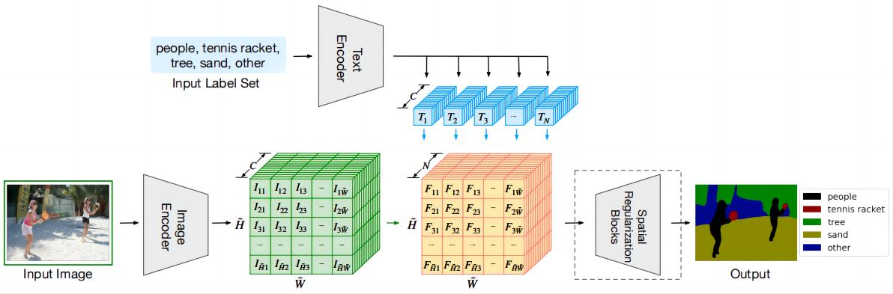
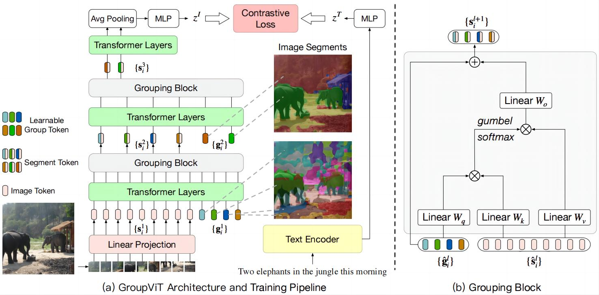

CLIP——从自然语言中学习视觉模型¶
CLIP简介¶
传统的视觉任务在训练模型时所用的数据集通常是一张图片对应一组标签的格式，训练过程具有单一性，并且训练出来的模型具有领域唯一性，即模型的适用范围仅限于训练数据所包括的范围，例如在ImageNet数据集上训练，模型最多只能鉴别数据集所包含的1000个类别，无法鉴别其他类别，如果想要用到新的领域，最常用的策略就是先修改分类层的输出，之后拿一些新领域的图片来微调（fine-tuning）模型的参数。
本文中，作者提出了一种利用文本特征作为监督信号的训练策略，不需要额外的标签来监督，摒弃传统一对一的训练模式，利用语言信息来描述图像，并且加以训练，让模型真正站在语义的角度上理解图像，可以让模型学到更全面的图像信息，更加贴合人类的认知方式。
网络结构如下图所示：

CLIP核心思想：利用对比学习策略，通过图文匹配来训练模型对图片的语义理解能力，从而实现zero-shot的功能。（后续对CLIP做改进也是为了让模型提升泛化能力，实现zero-shot功能）
训练过程：
- 利用图像编码器对输入图像做编码，得到图像特征；
- 利用文本编码器对输入的文本做编码，得到文本特征；
- 利用对比学习训练模型，依次计算每个图像特征与文本特征之间的相似度，让配对的图文特征更加相似，不配对的图文特征更加不同；
测试过程：
- 预设一组类别文本，构建提示词（prompt），”A photo of a XXX”，输入到文本编码器中获得文本编码；
- 将图片传入图像编码器，获得图像编码；
- 将图像特征与所有的文本特征做匹配，找出最相似的文本来，最终得到图像的预测类别。
简易代码¶
# image_encoder - ResNet or Vision Transformer
# text_encoder - CBOW or Text Transformer
# I[n, h, w, c] - minibatch of aligned images
# T[n, l] - minibatch of aligned texts
# W_i[d_i, d_e] - learned proj of image to embed
# W_t[d_t, d_e] - learned proj of text to embed
# t - learned temperature parameter
# extract feature representations of each modality
I_f = image_encoder(I) #[n, d_i]
T_f = text_encoder(T) #[n, d_t]
# joint multimodal embedding [n, d_e]
# 合并多模态特征
I_e = l2_normalize(np.dot(I_f, W_i), axis=1)
T_e = l2_normalize(np.dot(T_f, W_t), axis=1)
# scaled pairwise cosine similarities [n, n]
# 计算相似度
logits = np.dot(I_e, T_e.T) * np.exp(t)
# symmetric loss function
# 对角线上匹配
labels = np.arange(n)
# 对称的损失，同时优化图像和文本编码器
loss_i = cross_entropy_loss(logits, labels, axis=0)
loss_t = cross_entropy_loss(logits, labels, axis=1)
loss = (loss_i + loss_t)/2
语义分割方向改进¶
LDSE¶
测试效果

- 只需要给出想要分割的类别，模型就可以分割出对象范围；
- 具有较强的容错率，如第一行第三个，如果图片中没有车，即使让分割车的话，模型也不会产生错误的预测；
- 可以同时鉴别子类别和父类别；
- other表示背景区域，可以换成其他单词，如a、and、the等等，只要不与物体名字特别像就行。
网络结构：

- 整体结构和CLIP很像，这里将CLIP中整张图的分类改为了逐像素点做分类；
- Text Encoder直接使用CLIP中的文本编码器，网络结构和权重都不改变，训练过程中将参数冻住；
- Image Encoder采用DPT的结构（ViT+decoder）；
- 尺寸为(N,C)的文本特征和尺寸为(H,W,C)的图像特征沿通道方向相乘，计算相似度，得到尺寸为(H,W,N)的数据；
- Spatial Regularization Blocks是本文提出的一个新模块，计算完图文相似度之后再引入一些可学习的参数，用于进一步学习融合后的特征。
注：
- CLIP使用对比学习，利用描述图像的文本来做监督（不用指明图像的类别），相当于无监督学习；
- LDSE需要mask标签和对应的类别语义信息（需要特定指出来像素点的类别名称），因此是有监督学习，需要手动做标注；
- 语义信息的引入，使得模型可以实现zero-shot功能
GroupViT¶
无监督训练语义分割常用Group策略，由一个点向外发散，找相似特征，进一步生成一组mask。本文作者重拾Grouping算法，在ViT模型中加入Grouping Block，同时加入了可学习的Group tokens，慢慢将图像的特征聚类，变成一个个mask，网络结构如下图所示：

图像编码过程：
- 第一阶段先预设64个grouping tokens，图像特征和tokens经过6组transformer layers，再传入grouping block模块，做聚类操作，将特征序列分配给tokens，由于直接分配的话不可导，因此这里采用注意力操作，来做加权求和，将分配过程变为可导的；
- 和第一阶段类似，第二阶段再预设8个tokens，让输出的64特征与8个tokens一起经过3组transformer layers，再经过grouping block得到8个掩模特征。
训练过程：
- 8个特征经过全局平均池化、MLP等结构得到最终的图像特征，最后再利用图像特征和文本特征计算对比损失。
推理过程：
- 网络输出的8个tokens与文本特征计算相似度，相似度大于阈值的被视为前景，否则看成背景。
注：
- 这里的grouping tokens和ViT中的cls tokens、DETR中的查询向量功能类似，都是预设的网络输出，经过TF模块之后，预设的向量会综合考虑其余的特征向量，来得到最终的图像特征；
局限性：
- 由于网络只输出8个tokens特征，因此最多分割出八个类别；
- 背景干扰问题难以解决，mask容易生成，但是mask的分类不好做。（无监督语义分割的通病——难以确定类别信息）
目标检测方向的改进¶
未完待续。。